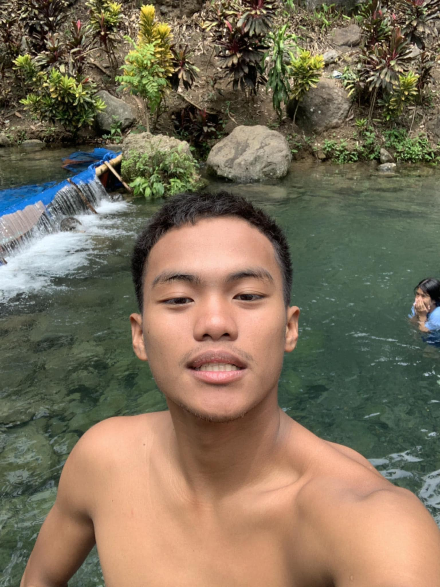
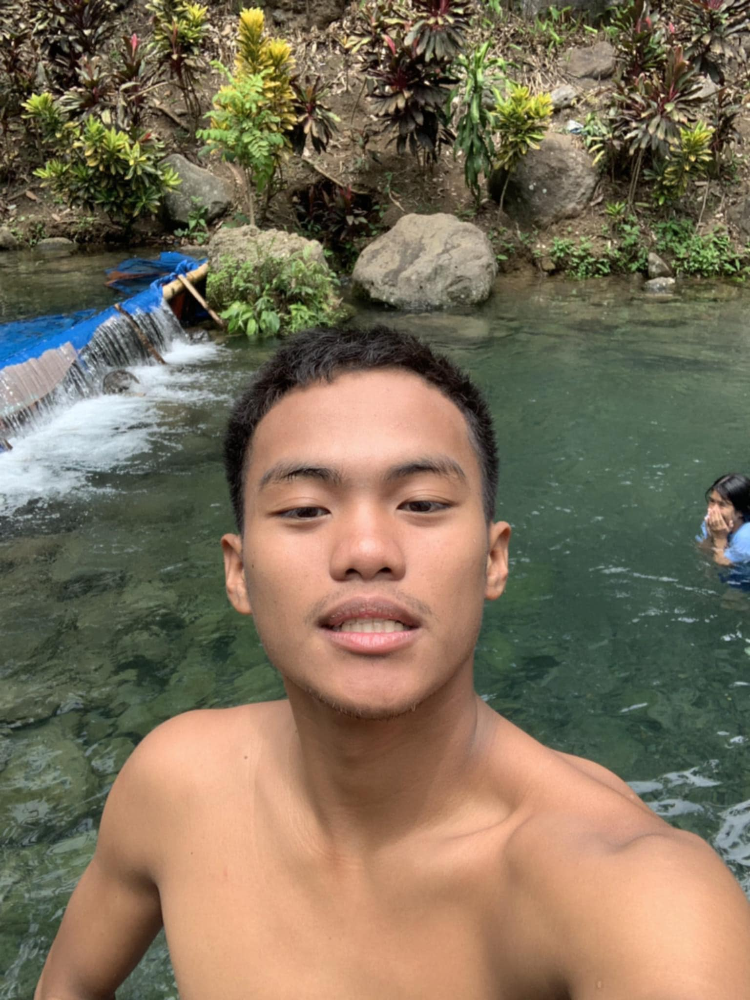

About Karenderya Searchers
Karenderya Searchers is your trusted guide to discovering the best local carinderias (small neighborhood eateries) in the Philippines. We believe that the heart of Filipino cuisine lies in these humble establishments, offering authentic flavors and heartfelt meals that connect communities and celebrate tradition.
Our mission is to make it easy for everyone to find great food nearby, support local businesses, and enjoy the rich culinary heritage of the Philippines. Whether you're looking for a quick bite or a nostalgic dining experience, Karenderya Searchers is here to help.
CONTACT OUR TEAM

CHRISTIAN REY SANICO
click here to contact us
